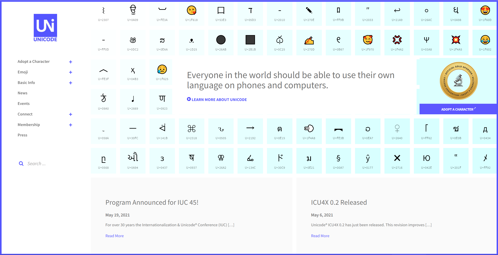
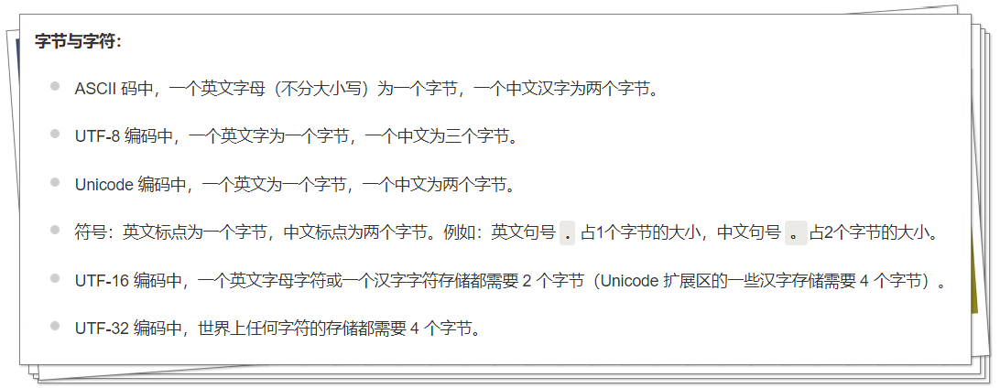

本书作者：测试开发刚哥，文章版权归个人所有，未经授权请勿转载。
字符
字符是一个信息单位，简单来讲就是一个字母、数字、标点符号、汉字等。
字符的最佳定义是 Unicode 字符：

它是一个全球化的标准，能表示世界上所有语言的字符。Unicode 字符的标识（码位）是以 4~6 个十六进制数字表示的，并且加前缀U+。
字节
字节是计算机信息计量单位，一个字节代表八个比特，存储的数值范围为 0~255。
字节跳动（ByteDance）互联网公司的字节就是这个字节。
字节是机器的，字符是人类的。
把人类字符转换为机器字节时使用的算法叫做编码，反之叫做解码。
算法不同，字节与字符的关系也不同：

bytes 和 bytearray
字节实际上是个二进制序列。不可变 bytes 类型和可变 bytearray 类型是用来存储二进制序列的，它们的示例如下：
>>> cafe = bytes("café", encoding="utf_8")
>>> cafe
b'caf\xc3\xa9'
>>> cafe[0]
99
>>> cafe[:1]
b'c'
>>> cafe_arr = bytearray(cafe)
>>> cafe_arr
bytearray(b'caf\xc3\xa9')
>>> cafe_arr[-1:]
bytearray(b'\xa9')
特别的是 cafe[0]返回了整数，cafe[:1]返回了二进制序列，这是因为s[0] == s[:1]只对 str 类型成立，而对于其他类型来说，s[i]返回一个元素，s[i:i+1]返回一个相同类型的序列。
二进制序列实际上是整数序列。它们的字面量表示法包含 ASCII 字符（ASCII 只能表示英文体系的字符），比如 cafe 的b'caf\xc3\xa9'，具体规则是：
- 从空格到
~的字符直接使用 ASCII 字符 - 制表符
\t、换行符\n、回车符\r、转义符\\ - 其他字符用十六进制转义序列，比如
\x00空字节
构建 bytes 和 bytearray 对象的方式有以下几种：
- 一个 str 对象和一个 encoding 关键字参数
- 一个可迭代对象，数值在 0~255
- 一个实现了缓冲协议的对象，如 bytes、bytearray、memoryview、array.array
memoryview 和 struct
memoryview 允许在二进制数据结构之间共享内存，struct 能从序列中提取结构化信息。
示例如下，提取一个 GIF 图像的宽度和高度：
import struct
with open("filter.gif", "rb") as fp:
img = memoryview(fp.read())
## 这里不会复制字节序列，因为用的memoryview
header = img[:10]
print(bytes(header)) # b'GIF89a+\x02\xe6\x00'
## <是小字节序，3s3s是两个3字节序列，HH是两个16位二进制整数
## 类型、版本、宽度、高度
struct.unpack("<3s3sHH", header) # (b'GIF', b'89a', 555, 230)
## 删除引用，释放memoryview实例所占的内存
del header
del img
小结
本文介绍了字符和字节的概念以及它们之间的关系，一个字符对应一个或多个字节。字符是人类的，字节是机器的，编码就是人类字符转换为机器字节，反之叫做解码。然后分别介绍了二进制序列的类型 bytes 和 bytearray，和二进制序列的工具 memoryview 和 struct。
参考资料：
《流畅的 Python》
http://www.ruanyifeng.com/blog/2007/10/ascii_unicode_and_utf-8.html
https://zh.wikipedia.org/wiki/%E5%AD%97%E7%AC%A6_(%E8%AE%A1%E7%AE%97%E6%9C%BA%E7%A7%91%E5%AD%A6)